壹、遊戲類型 & 適用平台
遊戲類型
◆ 雙人合作
◆ 無盡酷跑
◆ 冒險
適用平台
◆ 桌機平台： Windows, macOS
貳、企劃理念 & 故事大綱
企劃理念
《BOUND TOGETHER》的核心目標是讓「合作」成為遊戲的靈魂與致勝關鍵，整個遊戲聚焦於「只有在一起，才能走得更遠」的理念。
透過兩位玩家共用一條不可分離的「繫線」，將「羈絆」從單純的劇情設定轉化為核心的遊玩機制：
機制與情感的結合： 「繫線」是挑戰的來源，它限制了個體的自由，同時也是唯一能讓他們突破困境的希望與力量。
操作與信任的共鳴： 玩家必須在極高壓的無盡酷跑環境中進行精準的協調與移動，每一次向前、跳躍與閃避，都需要建立在對夥伴行動的深入理解與完全信任之上。
最終，透過這條「繫線」的操作與感受，體會到「信任是持續前進的唯一燃料」，並在遊戲中真實領悟到雙人合作的深刻意義。
故事大綱
在被稱為「迴音之境」的古老地下文明中，一場名為「大寂靜」的災難凍結了世界，兩個微小的生命體——光精靈與影精靈——在世界核心「光心」即將熄滅的微光中誕生。
他們一出生就被一條「迴響之線」緊密連結，這條線既是生命的保障，也是無可逃脫的束縛，為了阻止黑暗力量「虛無之黯」徹底吞噬世界，他們被迫踏上無盡的奔跑旅程。
前進的目標並非拯救世界，而是透過極致的合作與信任，跨越遺跡與陷阱，收集失落的「迴音」，只有持續的奔跑與不斷強化的「繫線」，才能為瀕死的「光心」提供永恆的動能，這是一場沒有終點的競賽，他們必須以永不熄滅的羈絆，成為世界的「光流」，守護這片黃昏之境，讓希望成為永恆。
參、核心玩法與機制
1、基本遊戲操作
《BOUND TOGETHER》是一款強調雙人合作與精準同步的 2D 橫向無盡酷跑遊戲，其核心機制圍繞一條「迴響之線」展開，這條線將兩名玩家緊密連結，成為遊戲的靈魂。
模式：
◆ 同機共命：兩位玩家在同一台裝置上，分割畫面或共用螢幕進行合作操作。
◆ 線上連絆：兩位玩家透過網路連線，在各自裝置上組隊，進行遠端合作。
◆ 光影共振：玩家單獨操控其中一位精靈，另一位精靈則由智能電腦夥伴操作，電腦擁有穩定的「錨點/動力」傾向，供玩家練習與挑戰極限。
類型：
◆ 關卡挑戰模式：挑戰預設的系列關卡，目標是在時間限制內跑完設定的距離，關卡難度隨進度增加 (時間更短、機關更複雜)。
2、 環境互動與挑戰
◆ 同步啟動/平衡：光影閘門、崩塌平台要求兩位玩家必須在精準的位置與時間點同步行動（如同時站在開關上），才能開啟通路。
◆ 拉扯與固定：錨點懸吊、光流汲取器
要求一位玩家扮演「錨點」固定位置，另一位玩家利用繫線進行盪越或脫困。
◆ 瞬時通過：吞噬活塞、迴響鋸齒群要求兩位玩家在極短、極小的安全間隙中，達成速度與身位的瞬間同步。
3、核心機制：迴響之線
| 說明 | 遊戲影響與應用 | |
|---|---|---|
| 繫線制約 | 兩位玩家必須獨立操控各自角色的水平移動與跳躍，但被一條長度固定的繫線連結，繫線決定了雙方動作會產生直接的相互影響與拉力。 | 玩家不能超出繫線的最大長度，任何魯莽的動作都會導致隊友被拉扯失衡或撞擊陷阱，若玩家持續往不同方向拉扯，恐導致其中一方掉落或被怪物吞噬。 |
| 張力與弛力 | 玩家需利用繫線的兩種狀態來通過關卡： 1. 張力 ： 繫線拉緊時的強大牽引力，用於拉動隊友脫困或進行遠距離盪越。 |
成功通過「錨點懸吊」、「吞噬活塞」等機關的關鍵，是掌握繫線的鬆緊變化。 |
| 強制捲軸與懲罰 | 畫面將穩定向右推進，象徵「光流」必須持續流動。 | 任何一方被畫面左側邊緣追上即視為掉入深淵，立即結束旅程，這迫使玩家保持持續的同步速度。 |
| 生命懲罰 | 兩名玩家的「光心」會提供三次共鳴修復機會 (生命數)。 | 任一方掉入深淵或耗盡三次生命，旅程即刻結束，強調彼此必須視為一體。 |
4、虛無之黯具象化陷阱
| 遊戲機制 | 合作要求 | 故事意義 | |
|---|---|---|---|
| 吞噬活塞 | 伸縮的黑曜石巨柱，會在玩家通過時高速閉合。 | 精準同步： 必須在活塞之間短暫的開啟瞬間，兩人同時且同步地加速通過。 | 象徵「虛無之黯」企圖用物理力量將「光流」壓碎。 |
| 迴響鋸齒 | 象徵「虛無之黯」企圖用物理力量將「光流」壓碎。 | 長度控制： 有些需要將繫線拉到最緊（光精靈在外圈，影精靈在內圈）以避開旋轉半徑；有些則需要放鬆（兩人貼近）從鋸齒間隙通過。 | 「虛無之黯」試圖用銳利邊緣切斷「繫線之絆」。 |
| 光流汲取器 | 環境中吸附在牆壁或地面，會緩慢吸走光精靈或影精靈的特殊力場。 | 拉扯脫困： 被吸附的玩家必須依靠隊友向反方向的強力拉扯來掙脫，如果拉扯不及，會被吸附至死。 | 象徵黑暗對角色個體意識的腐蝕與吞噬。 |
5、遊戲元素與故事的結合
一、繫線：
是「光心」最後的能量，也是彼此生命的延伸，它既是束縛，也是力量傳輸的媒介。
二、無盡跑酷：
象徵「光流」必須持續流動以維持世界的動力，停止即代表死亡。
三、陷阱/障礙物：
象徵「光流」必須持續流動以維持世界的動力，停止即代表死亡。
四、命數（撞擊 3 次）：
代表「光心」能為角色進行共鳴修復的次數。
五、掉入洞中（即結束此回合）：
象徵被「虛無之黯」徹底吞噬，連「光心」也無法將其喚回。
六、稀有迴音（黃色）：
價值 5 個光流，增加分數， 是「光之民」遺留的、最為珍貴的核心能量碎片，收集它能快速穩定瀕死的「光心」動能。
七、光流迴音（紫色）：
價值 1 個光流，增加分數， 代表世界必須持續流動的微小動力，它的存在提醒著精靈們：停止即代表死亡。
八、黃色藥水：
專屬光之精靈，恢復其生命，誕生於「光心」中最純淨的能量，只能與代表希望與記憶的光之精靈產生共鳴。
九、紫色藥水：
專屬影之精靈，恢復其生命，混合了「光心」與「虛無之黯」邊緣能量的產物，只能與承載衰敗警訊的影之精靈產生共鳴。
十、綠色藥水（陷阱）：
使兩位玩家同時扣除一條生命， 這是黑暗力量故意設置的誘惑，一旦觸碰，會瞬間切斷光與影的共鳴平衡，造成生命的雙重損失。
十一、沿途的「迴音」：
是「光之民」遺留的能量碎片，收集後能強化「光流」（分數增加）。
肆、遊戲流程
玩家從開始到結束一輪遊戲的流程（如：開始奔跑 →收集迴音→ 躲避陷阱→死亡/刷新 →重新開始）。
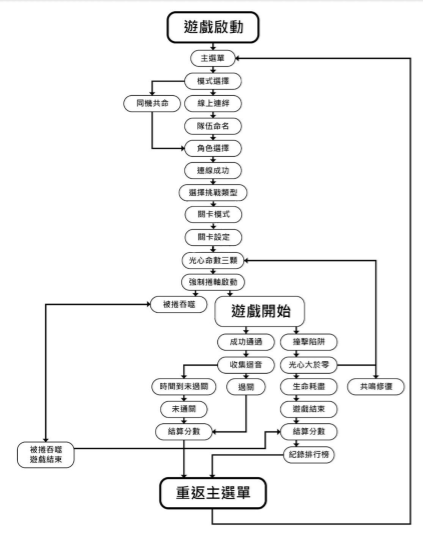
伍、角色設定
1、光之精靈：
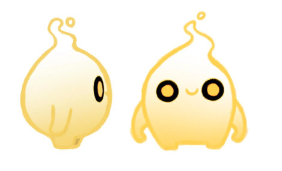
造型：
呈現為一個水滴狀或火焰狀的柔軟、圓潤身軀，頭部有向上流動的形狀，象徵著「光」的輕盈、向上與不滅，其簡潔的輪廓讓其在高速移動的酷跑遊戲中具有良好的辨識度。
意義：
粉紅色通常與溫暖、愛、希望相關，避免了傳統上「光」的黃色，使其更顯獨特和溫和，從粉色到白色的漸變，暗示著純潔與光明逐漸擴散的感覺，這種暖色調在遊戲的暗色場景中會非常醒目，象徵著點亮前路的希望。
色票：
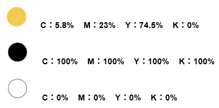
起源意義誕生於「光心」中最純淨、最不願放棄的能量，她代表著過去「光之民」所留下的美好記憶與對世界復甦的渴望。
性格特質樂觀、直覺強、行動派，傾向於引導方向和探索，是推動兩人持續奔跑的「動力」。
2、影之精靈：
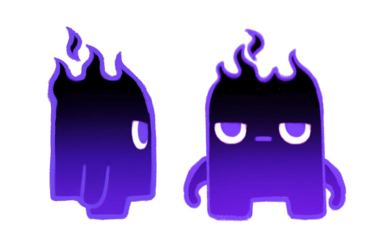
造型：
呈現為一個方塊狀的、相對堅固的身軀，頭部有向上的、類似火焰或尖刺的形狀，象徵著「影」的沉重、堅定與警戒，其穩固的形態暗示其「錨點」和「保護者」的角色。
意義：
藍色與沉穩、理性、憂鬱和神秘感相關，而黑色則代表著陰影和未知，這種冷色調與艾歐的暖色調形成鮮明對比，強化了兩者的互補關係，由藍到黑的漸變，暗示著影子的深邃與潛藏的力量，明亮的眼睛在深色身體上格外突出，象顯其在黑暗中洞察一切的能力。
色票：
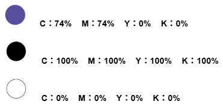
起源意義誕生於「光心」能量與周遭「虛無之黯」殘響的結合，他承載著世界衰敗的警訊與潛在的威脅。
性格特質謹慎、沉穩、本能地防禦，傾向於觀察和判斷危險，是確保兩人不墜落的「錨點」。
3、虛無之黯設計
一、闇影吞噬者：
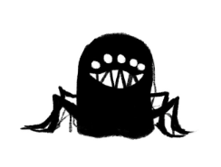
1、形態特徵：
多眼、利齒、圓潤且龐大的黑影生物，散發著純粹的飢餓感。
2、攻擊模式與傷害：
【追趕與衝撞 (持續威脅)】
牠通常出現在最底下的通道，作為一個不斷逼近的「死亡邊界」，牠會緩慢但穩定地向右移動，若玩家速度過慢被追上，會被直接吞噬，兩位玩家同時損失一條生命。
【突進撕咬 (瞬間傷害)】
在特定區域，牠會突然加速向前衝刺一段距離。若任何一位精靈被其利齒觸碰，該精靈會立即受傷（需使用對應藥水恢復）。
3、世界觀設定：
牠是「虛無之黯」對生命能量最原始渴望的具現，牠的目標不是切斷繫線，而是將一切發光的、有活力的個體連同其存在的痕跡一同吞入虛無之中，因此被牠追上意味著徹底的終結。
4、玩家躲避策略 (合作機制)：
【極限同步奔跑】
面對後方追趕的吞噬者，唯一的解法是保持高速度，兩位玩家必須完美同步跳躍與擺盪，避免任何一人失誤拖慢整體速度。
【繫線彈射】
當吞噬者發動突進時，位於前方或高處的精靈必須尋找穩固地形作為錨點，另一位精靈則利用繫線的張力進行快速彈射，瞬間拉開距離以躲避撕咬。
二、羈絆截斷者：
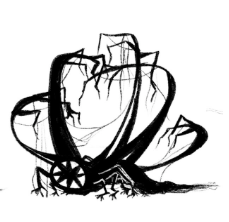
1、形態特徵：
形態最為複雜，由無數尖銳的荊棘、糾結的觸手與巨大的利爪構成，通常盤據在關卡多條分岔路徑的其中一條。
2、攻擊模式與傷害：
【休眠式區域封鎖】
牠平時處於偽裝休眠狀態，外觀與環境遺跡融為一體，但周身佈滿細小的「共鳴尖刺」。
【毀滅式甦醒】
只要玩家的本體觸碰到尖刺，會瞬間喚醒其內核。截斷者將瘋狂擴張並粉碎周圍的一切，導致該關卡現實崩壞，遊戲直接終結。
【繫線感應陷阱】
牠的核心對「繫線」的能量極度敏感。若兩位精靈試圖從其兩側繞過，導致繫線橫跨並觸碰其核心區域，繫線會被瞬間切斷，造成世界觀中的「靈魂斷裂」，遊戲失敗。
3、世界觀設定：
【秩序與混亂的邊界】截斷者並非主動掠食者，而是大災難後世界產生的「防衛性病毒」，牠們將所有「連結（繫線）」視為干擾大寂靜的雜訊。
【對「穩定度」的考驗】
它之所以休眠，是因為它在監測世界的穩定，當玩家觸碰尖刺或試圖包圍它時，產生的強大能量波動會觸發它的自毀程式，將這個不穩定的區域（連同玩家）徹底從現實中抹除。
4、玩家躲避策略 (合作機制)：
【決策溝通】
面對分岔路徑，玩家必須快速溝通：
哪一條路徑的「截斷者」尖刺較少？
一旦選定一條路徑（例如繞過上方），兩位精靈嚴禁分開行走。
【高低同步躍遷】
玩家必須利用「繫線」的弛力，確保兩人緊貼在一起通過，若要從其上方繞過，通常需採取「同步跳躍」，一人跳躍時，另一人必須在極短時間內跟上，否則繃緊的繫線一樣會掃過截斷者的尖刺。
三、無聲利刃：
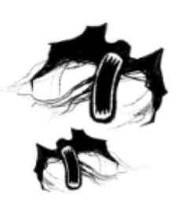
1、形態特徵：
簡潔、銳利，如同從牆壁或地面突然伸出的黑色刀鋒或尖刺，幾乎沒有預兆。
2、攻擊模式與傷害：
【高速伸縮突襲】
牠們隱藏在環境陰影中，會以極快的速度突然出現撤回。
3、世界觀設定：
秩牠們代表「大寂靜」災難後世界中潛藏的、不可預知的危險，就像災難發生時一樣，毀滅總是突然且無聲地降臨，旨在考驗倖存者的警覺性與反應本能。
4、玩家躲避策略 (合作機制)：
【觀察與預判】
無聲利刃雖然快速，但通常有固定的伸縮規律（每隔 2
秒伸出一次），玩家需要停下來觀察其節奏同時注意不被捲軸捲入。
陸、關卡設計
| 關卡 | 中文名稱 | 英文名稱 | 建議秒數 | 開發重點與配置 |
|---|---|---|---|---|
| 001 | 微光初醒 | Glimmering Awakening | 120s | 教學引導：設計寬敞的安全區域，讓玩家在無威脅下練習繫線的拉扯與同步跳躍。 |
| 002 | 共生之徑 | Path of Symbiosis | 110s | 資源管理初試：提高黃色與紫色藥水拾取頻率，強制玩家練習「幫隊友存藥水」的動作。 |
| 003 | 遺落殘篇 | Fragments of the Lost | 100s | 基礎平台跳躍：加入漂浮移動平台，測試兩人在繫線限制下的距離感。 |
| 004 | 靜默迴響 | Silent Echoes | 90s | 初遇威脅：正式配置第一種怪物「無聲利刃」，玩家需練習觀察伸縮規律並交替通過。 |
| 005 | 絆之試煉 | Trial of the Bond | 85s | 中段總結：配置「羈絆截斷者」，要求玩家必須緊貼彼此移動（繫線鬆弛態），不可橫跨機關。 |
| 006 | 虛空裂隙 | Void Fissures | 80s | 追逐戰開始：設計「闇影吞噬者」的追逐路徑，玩家必須保持高節奏移動，不可回頭。 |
| 007 | 記憶織線 | Weaving Memories | 75s | 高壓組合陷阱：配置「羈絆截斷者」與「吞噬活塞」的組合，要求玩家在極短時間內判斷鬆緊策略。 |
| 008 | 幽邃心核 | The Deep Core | 70s | 極限跑酷 (I)：大幅減少藥水分布，增加綠色陷阱藥水，要求極高精準度，確保 70 秒內能通過。 |
| 009 | 極光奔襲 | Auroral Sprint | 65s | 極限跑酷 (II)：以連續的空中懸吊點為主，測試兩人在 65 秒內的空中盪越與同步著地能力。 |
| 010 | 萬象共振 | Grand Resonance | 60s | 最終試煉：完美的 60 秒衝刺，混合所有怪物與機關。必須達成「光影同步」才能在最後限時內抵達終點。 |
柒、標準字設計
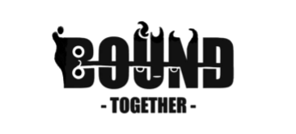
標準字採用粗體、塊狀的字型，呈現出古老遺跡般的厚重感，與遊戲背景「迴音之境」的氛圍相符。 以一條橫線貫穿 BOUND，代表了那條不可分離的繫線，它貫穿了角色的生命與旅程，這條線既是物理上的束縛（貫穿限制），也是能量流動的通道。 字母的邊緣並非平滑，而是被拉扯、滲透、甚至帶有火焰和水滴的模糊邊緣，模仿了角色身上的霓虹光暈與動態能量。 主標題「BOUND」的粗獷與細長副標題「-TOGETHER-」的簡潔，形成視覺上的層次感，強調了「束縛」的巨大份量與「在一起」的堅定信念。 字母 B 的左側邊緣被設計成光精靈頭部的水滴狀輪廓，代表著旅程的起點，由代表「希望」與「動力」的光精靈率先引領。 在 U、N 等字母的中加入了鋸齒狀或火焰狀，模仿了穎精靈頭部的尖銳火焰特徵，象徵著「影」和「虛無之黯」的警惕與潛在危險，無時無刻不在侵蝕著光明。
色票：
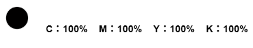
捌、介面設計
1、主畫面
玖、工作分配
| 黃玟潔(美術與視覺) | 詳細工作內容 |
|---|---|
| 主視覺 (Key Visual) | 1. 遊戲標題 Logo 設計。 2. 官方海報與載入畫面 (Loading Screen) 繪製。 |
| 角色設計 | 1. 光精靈 (Light)：45°/30° 角樣貌與跑步、跳躍、受傷動畫幀。 2. 影精靈 (Shadow)：對應動畫幀與物理碰撞外型。 |
| UI 介面清單 | 1. 主選單：Local Bond, Online Bond 按鈕。 2. 連線介面：Forge Bond, Resonate, 房間代碼輸入框。 3. 關卡選擇：001-010 關卡按鈕與鎖定狀態圖示。 4. 遊戲內 HUD：共用生命值(心形)、倒數計時器、距離進度條、迴音數量、藥水儲存格。 5. 無盡模式選單：Reconnect, Begin Anew, Hall of Resonance 按鈕。 |
| 物件設計 | 1. 藥水（黃、紫、綠）與迴音（黃金、紫色星形）素材。 2. 怪物素材（闇影吞噬者、羈絆截斷者、無聲利刃）。 |
| 楊舒喩(音效) | 需求數量 | 配置畫面 / 觸發時機 |
|---|---|---|
| 背景音樂(BGM) | 3首 | 1. Main Menu：神祕且帶有期待感。 2. Echoing Trials：隨關卡進度節奏加快，後半段(6-10關)增加緊張感。 3. Eternal Resonance：節奏感強烈，隨速度提升動態改變頻率。 |
| 角色音效(SFX) | 約5-8個 | 跳躍聲、落地聲、繫線拉緊的緊繃聲、角色碰撞受傷聲、角色死亡/心碎聲。 |
| 環境與系統(SFX) | 約10個 | 藥水拾取（正確/錯誤藥水的音效區隔）、收集迴音的清脆聲、倒數計時最後 10 秒的警示音、怪物攻擊/出現聲（如吞噬者的咆哮、利刃的伸縮聲）。 |
| 負責人 | 關卡範疇 | 工作重點 |
|---|---|---|
| 孫韻文 | 001-005關 | 1. 教學引導：設計安全區域讓玩家練習繫線物理。 2. 簡單機關：配置基礎平台跳躍與第一種怪物「無聲利刃」。 3. 資源分布：設定前期藥水的拾取頻率，確保玩家學會儲存藥水。 |
| 陳天豪 | 006-010關 | 1. 高壓陷阱：配置「羈絆截斷者」與「吞噬活塞」的組合機關。 2. 極限跑酷：計算最後三關(8, 9, 10)的移動路線，確保 60-70 秒內能跑完。 3. 怪物配置：設計「闇影吞噬者」的追逐路徑。 |
| 共同任務 | 無盡模式 | 設計多種隨機生成的「區塊 (Chunks)」，確保無盡模式的變化性。 |
| 負責人 | 模組名稱 | 詳細工作內容 |
|---|---|---|
| 呂友辰 (物理/核心) | Player & Tether | 1. Character Controller：雙人移動、跳躍、碰撞箱判定。 2. Verlet Integration / Spring Physics：開發那條「繫線」，包含拉力傳導、長度限制、繩子視覺渲染。 3. Monster AI：實作吞噬者的追逐邏輯與利刃的伸縮計時。 |
| 許立楷 (系統/邏輯) | Game Systems | 1. Network/Sync：Local 分割畫面與 Online Room (Photon/Mirror) 串接。 2. Inventory & Health：藥水拾取判定、儲存、扣血邏輯。 3. Game State Manager：倒數計時器、關卡加載、分數結算、排行榜串接。 |
拾、參考遊戲
場景參考：空洞騎士：絲綢之歌
遊戲設定參考：Badland(繫線)、SUPER MARIO BROS(虛無之黯)
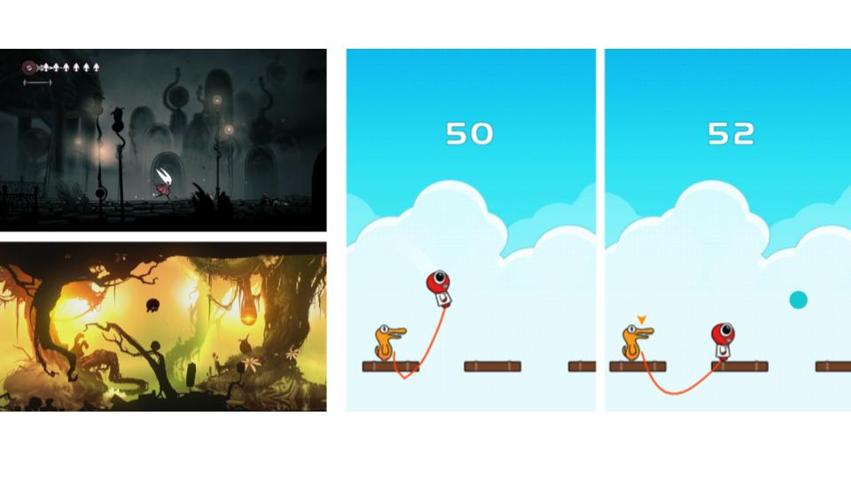
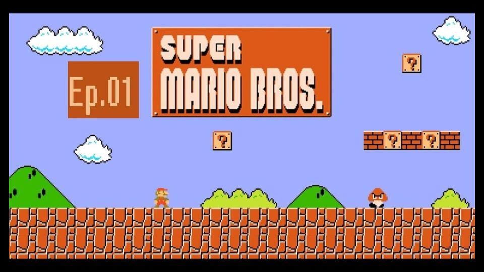